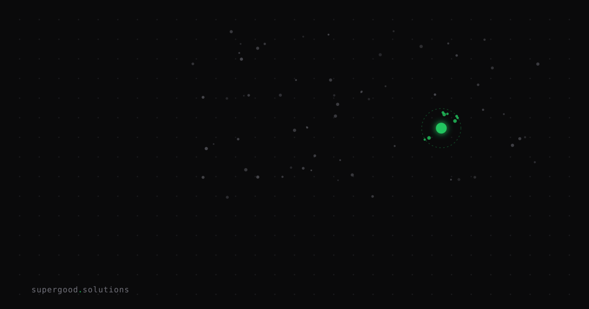

Your RAG Pipeline Is Running on 2023 Retrieval Tech
TL;DR: If your RAG stack still does query-embedding-in, top-k-cosine-out with a single dense vector per chunk, you're leaving retrieval quality on the table that a two-year-old technique — late-interaction, ColBERT-style multi-vector matching — already solves. Most teams shipped once and never looked back; that's the actual bug.
Key Insight
The industry default for RAG retrieval is still the "no-interaction" bi-encoder: embed the query, embed each chunk, compare with cosine or dot product, done. It's fast and it's what every "build a RAG app in 10 minutes" tutorial from 2023 taught. But it has a structural flaw — it forces the entire meaning of a document chunk into one vector before it ever sees the query. Any nuance that depends on which specific terms in the query matter gets averaged away.
Late-interaction models like ColBERT skip that compression. Instead of one vector per chunk, they keep a vector per token, and at query time they score each query token against its single best-matching document token (the MaxSim operator), then sum those scores. The interaction between query and document happens after both are seen, at the token level — not before, at the pooling level. On benchmarks like BEIR, this consistently beats standard single-vector bi-encoders on retrieval quality, especially on long, dense, or jargon-heavy documents: contracts, financial filings, technical docs, codebases — exactly the corpora enterprise RAG systems are usually built on.
The contrarian part isn't "use ColBERT." It's this: the RAG pipeline most teams are running in production today is architecturally identical to what they shipped as a proof of concept in 2023, and nobody scheduled a retrieval-quality review since. Everyone iterates on prompts and chunking; almost nobody revisits the embedding architecture underneath.
Why Teams Miss This
Three reasons this gets skipped, and none of them are "the tech doesn't work":
- Retrieval feels solved once it "mostly works." If the top-5 chunks look plausible in a demo, teams move on to prompt engineering and guardrails. Silent retrieval misses — the ones where the right chunk was rank 8, not rank 3 — never show up unless someone measures recall@k directly against a labeled set.
- Late interaction sounds like a research paper, not a production dependency. ColBERT dates to 2020; it feels academic. But it's shipped in mainstream tools now — reranking APIs, vector DB features (Weaviate, Vespa, Qdrant all support multi-vector/late-interaction natively), and libraries like RAGatouille that wrap it for normal engineers.
- Nobody wants to touch the index. Re-embedding a production corpus feels like a migration, not a tweak. So it gets deprioritized indefinitely, even when the fix doesn't require re-embedding everything from scratch.
How to Actually Do It
The upgrade path is incremental, not a rip-and-replace. Add late interaction as a second-stage reranker on top of your existing dense retriever — you keep your current index for cheap first-pass recall, and add token-level precision only for the candidates that matter.
# Stage 1: your existing dense bi-encoder retriever (unchanged)
candidates = vector_store.similarity_search(query, k=50)
# Stage 2: late-interaction rerank on the smaller candidate set
from ragatouille import RAGPretrainedModel
reranker = RAGPretrainedModel.from_pretrained("colbert-ir/colbertv2.0")
reranked = reranker.rerank(
query=query,
documents=[c.page_content for c in candidates],
k=8,
)
# Feed the top 8 reranked chunks into your LLM context, not the raw top-8 cosine matchesThis costs you one extra scoring pass over 50 candidates (cheap — it's a rerank, not a full-corpus search), and it doesn't touch your existing vector index or ingestion pipeline. If the quality lift on your eval set justifies it, the next step is moving late-interaction retrieval further upstream — either a native multi-vector index (Vespa and Qdrant support this directly) or a hybrid setup where late interaction handles the corpora that actually need token-level precision (dense technical docs, contracts) while bi-encoders keep handling everything else.
Before touching production: build a 30-50 query eval set with known "correct chunk" answers from your actual corpus, and measure recall@5 and recall@10 for your current pipeline versus the reranked version. If the gap isn't measurable, don't ship the added latency and cost for nothing — but for most enterprise document corpora, teams that run this eval find it's a real, non-marginal gap.
What We've Learned
Retrieval architecture is not a "set once" decision — it's a dependency that ages the same way model choices do, and most teams have never scheduled a review for it. The action item: pick your worst-performing RAG use case (usually the one with long or jargon-dense source docs), build a 30-query eval set this week, and measure recall@10 with your current dense retriever versus a ColBERT rerank pass on top. You'll know within an afternoon whether you're leaving quality on the table.
Sources
- Weaviate: An Overview of Late Interaction Retrieval Models: ColBERT, ColPali, and ColQwen
- LLMs.blog: Late Interaction and ColBERT: How Multi-Vector Embeddings and the MaxSim Operator Transform Neural Retrieval
- Inferensys: ColBERT vs Dense Passage Retrieval: In-Depth Comparison
- RAGatouille (ColBERT wrapper library): github.com/AnswerDotAI/RAGatouille
Have a specific workflow in mind?
Bring it to a Quick Scan — a live working session where we'll tell you honestly whether it should be an agent, a workflow, or left alone, before you spend a dollar building it. You get 3 prioritized recommendations on the call, a one-page summary after, and the $500 credited toward any engagement within 30 days.
Get new posts + practical agent-ops notes
One email when something new goes up. No nurture sequence, no spam — unsubscribe whenever you want.